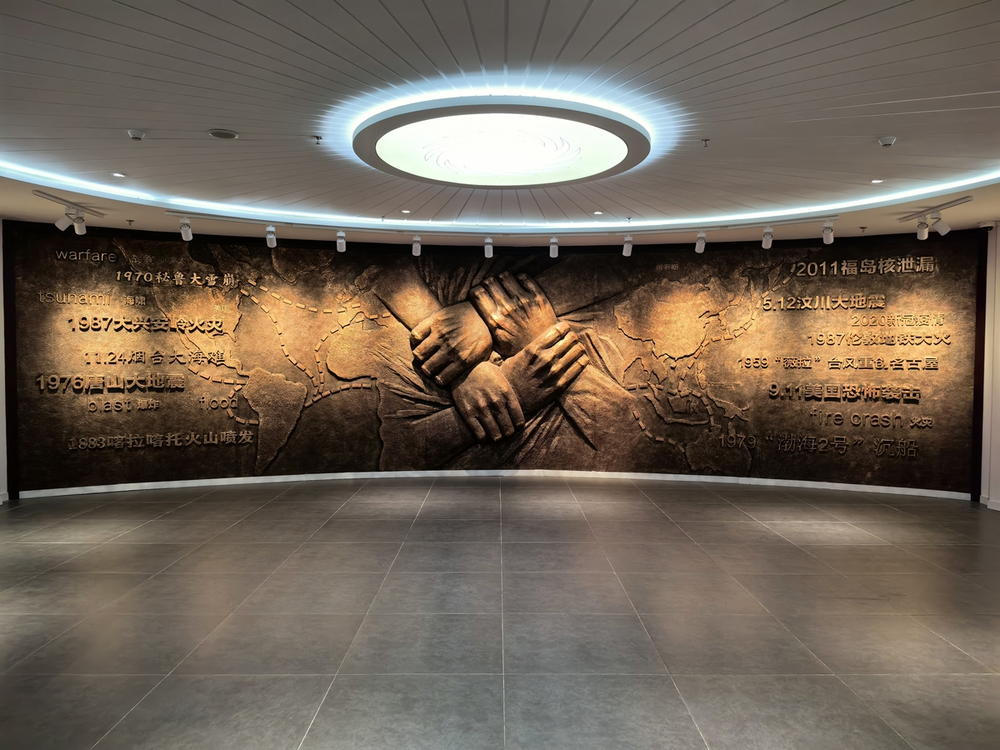

围绕保险的起源与发展及保险在不同历史时期起到的社会作用，结合馆内展板及藏品进行故事性的讲解。突出保险的作用与意义。
结合中外保险
讲解动线：入口——序厅——世界保险——中国近代保险——新中国保险——保险教育——企业展厅
在2013年3月阳光保险集团班子学习保险史的讲习班上，董事长张维功先生提出，目前全国还没有一个能让人们比较全面的了解世界保险史、中国保险史的保险博物馆，我们要下决心建设一个行业一流的博物馆。
然后安排从事多年宣传，对保险历史有研究的赵守兵先生牵头，经过8年不断的学习、参观、走访，搜集、整理、制作，沉淀和积累，中国保险博物馆于2020年7月28日正式落成。
博物馆规划面积有3000平米，展示区域分为两层，共四个行业展厅，分别是世界保险、中国近代保险、新中国保险和保险教育展厅。
目前博物馆共有藏品2389件，现展出共902件，后续我们会进行展品的扩充及价值进一步挖掘。

我们现在所处的位置是博物馆的入口处，入口处大门设计采用仿紫铜材质，突出保险的历史感与厚重感，上面的浮雕文字是四种文字的保险专业术语，这次术语经常出现在保险合同或产品当中，体现了保险的责任与担当。
序厅墙上出现的都是全球范围内出现的一些不可预知的天灾和人祸。
例如9.11事件，随着世贸大厦轰然倒塌，全球的安全都随时受到恐怖主义的威胁。
在这个充满偶发性的世界，我们怎么样才能够降低风险，求得安宁呢？请您看中间这四只紧紧握在一起的大手，他们彼此支撑，我们也希望保险就像着一双双紧握的手，在每一个人危难时刻，为其遮风挡雨，分担风险，共享阳光。
大多数人提起保险，都觉得是现代金融和国家治理体系下所诞生的金融产品，但其实保险思想的起源却由来已久。
腓尼基同指的是地中海东岸现场地带的一系列小城邦的总称。由于陆地面积狭小土地贫瘠，不适合大面积耕种，甚至自给自足也无法满足。
早在公元前3000年，该区域的居民就开始利用海洋运输，进行贸易往来。但相对于陆地，海洋充满了未知的风险，出海贸易危险极大，当时的腓尼基人就开始探索分摊风险的方法。
经过无数经验总结，慢慢形成了古代海上保险萌芽“弃货法”和共同海损原则。即如遇到危险，需要通过抛弃货物稳定船只，或因危险导致承运货物受损，那这部分价值损失，由全体承运商人保分摊，统一承担。这也被称为海上保险的起源。
随后共同海损原则以成文法的形式确定下来。公元前9世纪《罗德海法》诞生。
无论是共同海损原则还是《罗德海法》都只是对海上贸易损失的一种补偿措施，但其中体现的思想促进了后世保险业的产生与发展。
这幅图（古埃及壁画）展示的是古埃及时期，工匠所成立的丧葬互助组织。
古埃及的法老为了建造彰显自己身份的巨大金字塔，因此征用了大量的自由身份的工匠，由于金字塔建造工期长，这些工匠久而旧之就在附近定居了下来，世世代代为的修建金字塔，慢慢形成了工匠村落。
由于古埃及人信奉灵魂不死的观念，认为保存尸体不腐，才能获得灵魂的永生，去世后被制作成木乃伊获得永生也是他们的心愿，但制作木乃伊价格昂贵，个人难以承担，于是工匠们纷纷自发捐助逝去的人为其安葬，在这个行为中，慢慢演化出了一种丧葬互助组织，建立了丧葬财库，丧葬费由互助组织统一收取和调度。当某位工匠去世后，由其进行各类丧葬所需费用的支出，包括制作成木乃伊等。
丧葬互助会的成立，不仅满足了古埃及人灵魂永生的毕生愿望，也为当时社会整体稳定，及金字塔的建造起到了关键作用。
随着科技的发展，生产力的不断进步，造船术尤其在海洋文明国家得到了长足的发展。有了新的工具，经济的发展也得到了快速的进步，由此古代海上保险思想逐渐演化为近代海上保险。
人类历史的发展与海洋有着紧密的联系，于是海上保险成为最早发展起来的保险形式。海上保险的发展，带动了整个保险业的繁荣。
现代意义上的海上保险发源于13 世纪的意大利。海上保险是由古巴比伦和腓尼基的船货抵押借款思想逐渐演化而来的。在意大利北部城市，特别是比萨、威尼斯等地，由于地理位置的优越，一直是海上交通的要冲，已经出现类似现代保险形式的海上保险。那里的商人将他们的贸易、票据与保险习惯做法带到整个欧洲。
一张保单需要有明确的保险标的、保险责任、理赔条款以及确定的保费及保额。而您现在看到的这张保单是行业内公认的世界上第一张保单，具备了上述功能。这张保单是1384年签订与比萨港的一张海上运输保单。
保单规定了明确的航行路线，还有货物内容，有了明确定保险标的以及理赔条件、保费金额以及保额。
海上保险的出现，避免了船长或者承运公司因为海难或货物丢失导致的倾家荡产。分担了风险，促进了生产力的发展，从保障角度，激发了海上贸易的蓬勃发展。
随着大航海时代的开启，世界经济重心的迁移与海上贸易密不可分，由于荷兰航海技术发达，国家海上贸易昌盛，并且培养了一只强大的海军，在17世纪中叶，荷兰被称为“海上马车夫”。
到了18世纪，为了利益争夺，英荷海战爆发，经过四次战争，英国战胜了当时的海洋强国荷兰，取代荷兰海上贸易的位置成为海上贸易霸主。这奠定了英国后期经济快速的发展，这也使英国逐渐成为世界的经济中心，也为英国即世界保险行业的发展埋下种子。
始建于16世纪的伦敦皇家交易所，是英国经济发展见证的重要载体，象征着伦敦经济发展的交易所，却在1774年被一家保险组织收购，这家组织就是著名的劳合社。
现在位于英国伦敦的劳合社总部大楼，是英国最大的保险市场，也是全球最重要的专业保险市场之一。目前劳合社在全球200多个国家和地区拥有办事处，但它本身并不承办保险业务，只是为会员提供办理保险业务的办公场所和相关服务设施，就像证券交易所一样只是作为管理和服务的机构。
1688年，爱德华·劳埃德在伦敦泰晤士河畔开设了一家咖啡馆。由于咖啡馆的地理位置与经营航运的机构非常近，于是经营航运的商人、船东、银行高利贷者纷纷来到咖啡馆会晤，交换信息。使咖啡馆成为了航运消息的传播中心。1771年咖啡馆的79位客人每人出资100英镑，在原有咖啡馆的基础之上于1774年建立了劳合社。后来劳合社逐渐发展为承保海上保险的重要机构。
海上贸易及经济发展需要保险的保障，在人们的生活中，同样也需要保险的保障与支持。
1666年9月2日凌晨，伦敦布丁巷的一家面包铺失火，由于房屋大多是木质结构，且周围都是货物仓库，杂物众多，火势很快蔓延。连续烧了4天，伦敦市内448亩地域中，373亩被毁，占伦敦总面积的83.26%，造成经济损失1200多万英镑，相当于现在的20亿英镑左右。
伦敦大火之后，一位建筑商人尼古拉斯·巴蓬看到被大火蚕食殆尽的家园，和瞬间破产的市民，内心感到无比的沉痛。于是他思考，可否将火灾意外，通过保险的形式，来进行风险的转移与分摊。
1680年，巴蓬成立了火灾保险所，后发展为菲尼克斯即凤凰火灾保险公司。
由于先进的保险设计理念，即差异化的保费定价，巴蓬也被人成为保险之父。
并且他还创办了由保险公司成立的第一家消防队。致力于为客户提供更多火情方面的服务。而且我们现在所熟知的红色防火标示，也是凤凰火灾保险公司最先提出并使用的。
在这之后，英国火灾保险迅速发展起来。到1690年，伦敦已有约十分之一的房屋投保，这直接推动了火灾保险的发展。
在海上保险的产生和发展过程中，一度包括人身保险。15世纪后期，欧洲的黑奴贸易频繁，但由于运输条件恶劣及传染病病发等问题，有非常多的黑奴在运输过程中死亡，为了挽回损失，分散风险，奴隶贩子把运往美洲的非洲奴隶当作货物进行投保，其实还是财产险范畴，但是有了人身保险的内核。
后来船上的白人船员不满只为黑奴进行投保保障，要求同样需要相关的人身安全保险。如遇到意外伤害，由保险主体给予经济补偿，这些应该是人身保险的早期形式。
埃德蒙·哈雷是英国天文学家，哈雷彗星的发现者。1693年埃德蒙·哈雷设计出一张“从出生到年老”的表，表上体现了人年龄发展对个人生命不同阶段额影响。初次将保险定价和精算学运用到保险实务中。
1699年成立的英国孤寡保险舍，被认为是世界上第一家真正的人寿保险组织。
工业革命引起生产生活方式的巨变，人们对危险保障的需求持续扩张，年金保险、汽车保险、飞机保险、责任保险、信用保险等创新保险产品相继诞生。
20世纪，美国、日本、欧盟成为全球主要的保险市场。进入21世纪，虽然呈现出地区多极化的发展态势，但美国仍然是全球最大的保险市场。
当古埃及文明、两河流域文明和爱琴海文明当中人们利用保险思想抵御风险的同期，身处在遥远东方的华夏文明也已经出现了原始的保险思想萌芽。那是在四五千年前的夏商时期。从那一时期开始，我国就已经出现“仓储赈灾”“耕三余一”等分散风险的方法，但由于历史经济等客观原因，这些思想并没有向现代保险转化。
直至19世纪初期，伴随着西方列强的战争侵略，中国被迫开设通商口岸，国际贸易才开始扭曲的发展，现代保险也得以传入中国。
最先传入的地方是广州，因为广州是清政府特许经营对外贸易的唯一口岸，开设了广州十三行。
在“一口通商”时期，广州十三行的贸易达到顶峰。但当时主要贸易物资为西方国家在我国进口茶叶以及瓷器为主，而我国小农经济自给自足，对资本主义国家来言，存在大量贸易逆差。
之后，英国为扭转贸易劣势，开始对清朝倾销鸦片。但运输鸦片从广东进入中国需走海运，海上贸易风险较大,于是鸦片商为了降低风险，有怡和洋行于1805年在广州设立了外商在中国设立的第一家具有现代意义的保险公司——谏当保安行。谏当保安行主要经营水火险和意外险，且只为外国货船提供服务。
鸦片战争以后，中国沦为半殖民地半封建社会，一些具有爱国思想的知识分子抱着“师夷长技以制夷”的目的向国人传输西方的先进思想。
其中最具有代表性的就是魏源和他所著的《海国图志》。这本书是第一本介绍西方人文地理等知识的书籍，并且他还在 《海国图志》中首次向国人介绍了英国的航运保险。遗憾的是，《海国图志》因为政治及社会原因，在当时只起到了启蒙的作用，并未产生太大波澜。
反而是对我们的邻国日本产生了深远的影响。三次传入三次引起极大的轰动，在该书传入日本23年后，日本第一家海上保险公司—保任社就成立了。
中国的民族保险业发展，要追溯到洋务运动时期，因为列强侵略，清政府被迫开设众多通商口岸。
上海成为通商口岸后，由于更优秀的地理位置，逐渐成为保险业中心。
当时，外资彻底垄断了中国保险市场，随着洋务运动的开始，李鸿章开办轮船招商局，开始振兴中国自己的航运事业。
为打破外资保险公司垄断。1874年，官府出资120万两白银，李鸿章委托唐廷枢、徐润筹建保险招商局，1875年12月，中国第一家船舶保险公司——保险招商局成立。后来根据业务发展，又开设了仁和水险公司，业务范围进一步扩大后，改名为济和水险公司，保险招商局及仁济和水险公司的成立，打破了外国保险公司对中国保险市场的垄断，。
此后民族保险公司纷纷成立。自此，民族保险业开始兴起。
民族保险业真正得到快速发展，是在1911年辛亥革命推翻了清政府的统治后才开始的，在这一时期迎来民族保险业第一个发展高潮。
提到民族保险行业，就必须要说到一个人，那就是被誉为“寿险大王”的吕岳泉。
吕岳泉于1912年7月1日创办华安合群保寿公司。初创时期，便聘请外商保险人才，培训销售队伍，使得业务迅速发展。成为与外商寿险公司相抗衡的华商寿险公司。
华安合群名称的含义是：合众人之力，保中华平安。
吕岳泉交游广阔，凭着超群的天资和勤奋，嬴得众多名流的投资与支持。
黎元洪（民国大总统）、冯国璋（民国副总统）、盛宣怀（洋务运动核心、中国实业之父）
1927年，南京国民政府成立，展开了一系列恢复国民经济的措施。一大批华商保险公司在这一时期建立起来。当时，上海是我国金融中心。这里是上海外滩金融街的场景还原，展现出了当年各保险公司招牌林立的繁荣景象。
短暂的繁荣后，1937年7月7日，日军炮轰宛平城（卢沟桥事变），抗日战争自此全面爆发，民族保险业受到沉重打击。中国保险业逐渐形成以重庆为中心，辐射整个大后方的格局。当时的国民政府出面办理了战时兵险，对抗战起到了积极作用。
陆地兵险与运输兵险，都属于战争险范畴，是在战争环境下开办的一种特殊保险项目。
1939年夏季，中央信托局保险部开始办理陆地兵险业务，并安排项磬吾潜回上海，招募了13名保险界精英，组成一支办理陆地兵险的骨干队伍。绕过日军占领区域，经香港、越南转辗至昆明。后前往成都、重庆、贵阳、桂林、西安等城市，负责培训当地业务经办人员，兵险业务遂在内地全面铺开。1940年兵险总部由昆明迁至重庆，13人因此被保险界誉为“十三太保”。这十三人中有两位是共产党员，他们不仅对陆地兵险的开展做出突出贡献还参与组建了上海保联。
1937年11月，上海租界成为“孤岛”。中共上海地下党组织考虑到保险行业与各行各业联系广泛，有利于掩护地下党员和党组织的秘密活动，于1938年5月组建了保险业第一个党支部，由程恩树任支部书记兼组织委员，林震峰任宣传委员，他们积极联系保险业胡詠骐、谢寿天、郭雨东等人，共同筹建了“上海市保险业业余联谊会”。1938年7月1日“保联”成立，广泛吸收各保险公司会员参加抗日救亡运动，“保联”为保险事业以及中国的革命事业作出了积极的贡献。
中共地下党为了深入开展党的抗日民族统一战线工作，除了成立“保联”外，在上海和重庆分别创立了大安和民安两家保险公司。
新中国的成立开辟了中国历史的新纪元，中国保险事业也由此掀开了崭新的一页。为了建立起适应社会主义需要的保险业，从1949年到1978年，我国的保险业经历了一个从起航到停滞的这么一个阶段。
随着解放战争的胜利推进，上海、天津作为当时中国的两个金融重地，也随之解放了。并且建立起了军事管制委员会去接管和清扫了旧中国剩下来的官僚资本保险公司，整顿改造私营保险公司，为新中国保险事业的发展奠定了基础。
1949年10月20日，中国人民保险公司在北京正式成立，宣告了新中国国家保险机构的诞生。中国人民保险公司最初设址在天安门广场西南、西交民巷108号，由时任中国人民银行副行长胡景沄兼任公司第一任总经理。在极短的时间内，中国人民保险公司迅速发展壮大，到1958年，已经在全国各地遍设分支公司，工作人员逾5万人。
1944年，中国保险公司更名为中国产物保险股份有限公司，设址于上海。1949年8月第一次全国财经会议后，改组为中国保险公司，专营外币业务，办理海外机构业务，接受国内分保并开展海外分保业务。经过不断改组，中国保险公司成为中国人民保险公司领导下的专业涉外公司。50年代初，中国保险公司从上海迁至北京。
1956年，国家实行公私合营企业财产强制保险，指定中国人民保险公司为办理财产强制保险的法定机构。
同年，公私合营性质的“太平保险公司”“新丰保险公司”合并为“太平保险公司”，由中国人民保险公司管理，专门办理国外保险业务。
自此，国内保险业务开始由中国人民保险公司独家经营，标志着中国保险业社会主义改造的完成。
1958年，“大跃进”运动开始。同年12月，全国财政会议正式作出“立即停办国内保险业务”的决定，仅保留了涉外保险业务。
国家领导认为，人民公社化以后，保险已经完成了历史使命，不再具有必要的作用。
保险已经不适合新社会的发展，故没有必要再办理下去。
保留涉外业务的原因：
国外保险业务是国际贸易成交的必要条件，保险费是货物价格的组成部分，进口货物在国内进行保险可以增加非贸易外汇收入。所以支出一定的金额分保外汇，取得发生损失后的外汇赔偿是非常必要的。
办理国际再保险业务，不仅可以分散危险，保持业务的稳定发展，还可以配合国家对外政策开展国际经济合作。考虑到在国际贸易和国际信贷中不可缺少保险，所以涉外保险业务应当继续保留。
涉外保险也在该历史时期起到了重要的作用，比如跃进轮事件。
1963年，我国第一艘万吨级远洋货轮在大连船厂建造完成，堪称中国的“泰坦尼克号”。同年5月1日，“跃进”号开始了她的首航，装载着1.3万吨玉米等货物从青岛港出发，开往日本。
为了保险起见，在临航前的4月20日，外贸部门向中国人民保险公司投保了保额为125万英镑的船舶全险、费用险和战争险，其中人保公司自保21万英镑，其余104万英镑分保，分给了20多个国家的90家保险公司。
风险无处不在。5月2日，驶离青岛港后的第二天，这艘“永不沉没”的巨型货轮便在海上触到暗礁永远地沉入了海底。
值得庆幸的是，由于临航前外贸部门及时办理了保险，并进行了国际分保，最后从几十个国家的保险公司收回了104万英镑的巨额赔款，加上国内保险公司承保的25万英镑，赔偿的保险金足以再造两艘“跃进”号，通过保险为国家挽回了巨额经济损失，受到了中央领导的高度赞扬。
为了适应社会主义现代化建设的需要，适应经济体制改革和发展对外贸易、利用外资的需要，1979年2月，在北京召开的中国人民银行全国分行行长会议，及时作出了“逐步恢复国内保险业务”的重大决策。
同年11月，全国保险工作会议在北京召开，使我国停办20多年的国内保险业务开始正式复苏，进入到一个崭新的发展时期。
1986年成立的新疆生产建设兵团农牧业生产保险公司（后更名“新疆兵团保险公司”），打响了中国保险体制改革的第一枪。
1988年5月27日，中国平安保险公司在深圳蛇口成立。
1991年，中国太平洋保险公司获准成立。使我国保险市场从一枝独秀开始走向“百花齐放”的局面。
1995年《保险法》颁布实施，这是我国第一部保险法，从此我国保险市场开始实施产、寿分业经营，并探索对外开放试点。
1998年11月，中国保险监督管理委员会成立，标志着我国保险业从此进入有法可依、依法经营、依法监管的新阶段。
2001年11月，我国正式加入世贸组织，对保险业作出“高水平、宽领域、分阶段”开放的承诺。商议在5年后，全面开放国内保险市场。
自此，我国保险业进入全面发展时期，基本建立起一个统一开放、竞争有序、充满活力的保险市场。
2006年6月26日，《国务院关于保险业改革发展的若干意见》（简称“国十条”）正式颁布，这是新中国成立以来第一次以国务院名义下发的专门针对保险业的文件，对保险业的发展起到了巨大推动作用。
2014年，国务院出台《关于加快发展现代保险服务业的若干意见》（简称“新国十条”），进一步提升了保险业的战略定位。
到目前为止，我国保险业一直保持强劲发展势头，增速远超国内生产总值，成为国民经济中“主要增长部门”之一，并已发展成为全球最重要的新兴保险市场。
随着时代的发展与金融监管体制改革的深化，我国对保险业的监管不断完善，逐步构建起系统规范、科学有效的现代保险监管体系。
在2018年的国务院机构改革中，中国银行业监督管理委员会和中国保险监督管理委员会职责整合，组建了中国银行保险监督管理委员会，简称“中国银保监会”。中国银保监会下辖多个与保险业相关的机构。银保监会的正式挂牌填补了我国金融市场的监管交叉和空白。
根据2023年国务院机构改革方案，组建国家金融监督管理总局，不再保留中国银行保险监督管理委员会。
近年来，我国保险业不断发挥着经济“减震器”和社会“稳定器”的作用，成为农业保障体系的重要内容、社会保障体系的重要支撑、社会治理体系的重要机制。
保险教育是关系保险行业和教育事业全面发展的重要环节。能够在保险业中取得成就同样需要保险教育的支持。
英、美的保险教育起步较早，且有较为成熟的系统。中国保险教育始于晚清，起步虽较西方晚，但发展迅速，尤其自改革开放以来，呈现跨越式发展态势。
【单元说明】
保险业发展除了需要加强监管外还非常需要教育产业的支持。
正如在世界保险厅了解到的，真正意义上的保险起源于欧洲，因此人们对保险的认知较早，英国就是最早开始保险教育的国家。
英国的保险职业教育主要以培养保险职业知识技能为主，政府及公司都给予强大的扶植力量。英国特许保险学会（CII）是其典范代表。
英国特许保险学会，又名英国皇家保险学会，成立于1897年，1912年被授予皇家特许状，成为特许保险学会。该学会是全世界威望最高的保险教育和学术机构，考试制度十分严格，获取CII保险资格证书是从业者的殊荣。
美国保险教育在世界属于一流水平，主要以高校培养人才为主，许多高校早在20世纪初期就开设了保险课程，1925年，就已经有93所大学讲授保险学。
到了1982年，全美就有493所大学开设风险管理及保险课程。起步早，发展快。
日本保险教育主要由各保险相关机构和公司等组织实施，系统而全面的职业教育使得日本保险能稳步发展。
魏源在《海国图志》中首次向国人介绍了西方的保险，随后，保险内容开始出现在新式教育课本之中。
1902年，京师大学堂率先设置了保险课程，1925年《保险学》教材问世，至此，保险教育走上了正规化发展道路。
保险启蒙教育始于晚清的《笔算数学》“保险”章节。这本书为研究、评估西方保险思想传入中国的途径、普及方式提供了全新的珍贵史料及视角。是清末民初保险普及第一书。
自晚清起，保险业有识之士就开始大力提倡保险学术理论研究，宣传普及保险知识，以振兴民族保险事业。
1902年，京师大学堂率先设置了保险课程，1925年《保险学》教材问世，至此，保险教育走上了正规化发展道路。
改革开放后，中国保险业涅槃重生。1980年，中央财政金融学院（今中央财经大学）率先恢复保险专业，标志着我国保险高等教育正式拉开序幕。经过四十余年的发展，我国保险教育体系已日臻完善，在深度和广度上均取得了巨大成就，为新中国保险事业建设培养了大批人才。
1952年，中央财经大学开设了新中国第一个保险专业，1980年率先招收保险专业本科生。
20世纪80年代初期，中国人民保险公司委托南开大学等4所大学开办保险专业，自此，保险课程走进高校。
这条时间线上展示了我国当代院校保险教育蓬勃发展的历程。
李秀芳：中国第一位女精算师，毕业于南开大学。
2019年全国已开设保险专业（或保险课程）的高等院校有123家。其中985/211院校：21家；本科一批（非985/211）：32家。我们在这里展示了其中的54所高校的校徽，通过转动灯牌，可以查看该院校的简介及保险课程开设的情况。
为了发展保险事业，培养保险人才，一代代保险教育家启人心智，传授保险知识于四海。
保险教育家犹如教育原野里葱茏繁茂的大树，为推动保险教育事业发展壮大做出了不可磨灭的贡献。
阳光之道专题展厅
改革开放后，我国保险业迅速发展，造就了一代企业家。
阳光保险集团董事长，也就是阳光保险创始人张维功先生，在改革开放初期就加入中国人民保险公司，成为了第一批保险业务员。在服务客户和社会的过程中，他深刻体会到了民众和社会对保险的迫切需求。于是他走上街头，将专业的保险知识传递给更多需要的人，从一名最基层的保险业务员开启了他的保险职业生涯。由于他工作认真刻苦，且从不畏惧困难艰险，即使在恶劣天气也从不忘记为客户提供优良服务。在工作了一段时间后，他的业务能力和为人秉性得到了客户与公司的高度认可，也在行业中有了一定的知名度，很快成长为一名高级管理人员。
2001年，张维功先生作为年轻优秀干部成为中国保监会第一批外派的保险监督官，履职中国保监会江苏特派办，担任主任和党委书记一职。2002年，张维功率先在全国发起并建立了保险信用建设体系。
2003年，张维功先生调职南方经济大省——广东，并晋升广东保监局局长和党委书记，成为行业系统内最年轻的正局级干部。
2004年，中国政府已加入WTO三年时间了。按照之前入世承诺，中国需在入世5年后，全面向国际社会打开国内保险市场。但是当时我国的民族保险业依然十分弱小，不足以扛起国外资本的强势进入。为了打造民族保险业的标杆，已经担任广东保监局党委书记、局长的张维功毅然弃官从商，下海创业。
2004年5月19日，张维功和创业团队抵达北京，开始了创业之路，这张照片是张维功先生在首都机场接受央视记者采访时的珍贵镜头。当记者问他此行目的时，他步履不停的对着央视镜头说到：是为了筹建一家保险公司而来，都是为了中国保险业的做大做强。
这几件藏品是董事长从广东飞往北京的这张珍贵的登机牌，细心的您会发现，这是一张早班机机票，以及这是他使用过的诺基亚手机和公文包，都是非常基础的款式。这也表明了董事长一直是一位专注于事业，勤奋朴素的做实事的人。
创业之路十分艰难，因为原有战略思想的不同，董事长艰难却又毅然决然的放弃了原股东，开始重新寻找能与他整体战略思想与行业认知相同的新股东。
这期间，张维功先生和创业团队不但没有一分钱的收入，而且购买办公用品、以及最基础的吃饭住宿等都是董事长拿出自己不多的三十余万积蓄来维持。为了降低费用支出，三换办公场所。从北京饭店，搬到了费用相对低的潍坊驻京办事处。出租车和地铁都是创业团队在京出行的主要交通工具。
而且董事长带领创业团队在乘坐出租车拜访意向股东的时候，常常在距离目的地还有几百米的时候就下车步行前往。就怕意向股东发现自己连公车都没有还需要打车代步，留下先入为主的不好印象。
在创业阶段，他们在8个月的时间，跑遍了全国17个省，沟通了389家企业，最终获得战略投资者的青睐，开创了非政府牵头、非既定股东支持组建金融机构的先河。这也是中国保险行业内，第一家也是唯一一家，由真正意义上由初始团队通过艰苦创业而产生的保险公司。
创业团队历经万般艰辛，用了8个多月的时间，终于在2004年的12月24日的平安夜，拿到了中国保监会的批筹文件。当庄良连夜取回文件交给等候已久的张维功先生时，俩人百感交集，阳光产险的筹备之路正式扬帆起航。
这里收藏了创业团队，在原山东省潍坊市政府驻北京办事处招待所办公时的实物原件。包括沙发、茶几、电视机、烟灰缸等。
为了纪念这一段不平凡的创业历程，阳光保险将5月19日命名为“阳光创业日”，“12月24日”命名为“阳光升日”，这个“升”是升起的“升”，寓意着阳光保险蓄势待发，如同旭日一般，即将冉冉升起。阳光的创业历程，形成了阳光保险“敢于挑战，坚韧不拔”的文化基因。后来公司也将5.19和12.24，这两个特殊的日子，定位公司的阳光文化日。每到这天，全司上下，都要重温当年董事长创业的历程，坚定阳光的“创业基因”
在2005年7月28日，阳光产险获得“企业法人营业执照”，这标志着阳光产险正式成立。
这张照片拍摄于2005年，是阳光产险筹建团队最后一天在长安街北京饭店办公时，在露台上拍摄的一张纪念照片，因为第二天他们就要入驻我们总部现在的办公地点，朝阳区的昆泰国际大厦。
大家可以看到，照片里他们所站的这个露台，形状好像一艘船，预示着阳光保险即将在未来的发展中乘风破浪，扬帆远航。
这个场景局部复原了北京饭店外景和筹备组办公室内景。场景内悬挂的是阳光产险（筹）的第一面司旗，上面有筹备组全部人员的签名。
这是阳光产险在《中国保险报》上刊登的第一则招聘广告，当时这篇招聘广告，引起了行业内不小的轰动以及热议。因为以往的招聘广告，总是在讲述我们需要什么样的人才，而阳光则是逻辑反转，首次提出，我们不需要什么样的人才，比如从不看新闻联播的人，我们不需要，内在逻辑是不关心国家大事，政策发展的人，阳光不需要，还有买东西不为公司砍价的人，我们不要，这也体现了一个人他的职业素养，阳光素来倡导，节约不仅是一种意识，更是一种能力，不为公司节省成本的人，我们不要。类似这样的要求，还有很多，这也体现了阳光保险独特的人才观。
阳光产险筹建伊始，张维功带领团队回顾“创业之旅”，总结提炼文化内涵，明确了“敢于挑战、坚韧不拔”是阳光文化的基因。有媒体将阳光筹建时的这一做法称之为：公司未动，文化先行。
在公司开业前，张维功和筹备团队用四个月的时间，经过反复讨论和斟酌，编撰了《阳光之道》手册，设计了品牌识别系统，创作了司歌《阳光时代》，构建了以《阳光之道》手册为载体的阳光文化体系。
《阳光之道》正是阳光对自身价值主张和成长法则的系统思考，也是每个阳光人的行动指南。
《共同成长》系列丛书是张维功先生历年来的讲话稿汇编，为称为阳光内部的“红宝书”因为书中所记载的内容，是如何建立一家现代化保险公司的核心内容，时过多年在翻阅起来。仍能在其中要到许多现存问题的解决办法。这体现了阳光对保险行业知识和经验的积累，是创业者理想和抱负的结晶，是全体阳光人不断丰富和发展的智慧。
在阳光金融城建设之初，张维功先生给设计师提出了两点要求：一是要成为阳光企业形象的象征，二是给一百年后的北京留点什么，成为历史的文化遗产。
这是张维功先生在2004年12月24日的晚上，拿到保监会批筹文件后，仅用5分钟就写下的《五十字箴言》，后来董事长花费更多时间反复推敲，发现这五十个字，一个字都不能修改：
集众家之长，取自我之道；聚业内人才，纳业外贤士；高起点组建，远战略发展；风雨中做事，阳光下做人；走精英之路，创阳光品牌。
2008年3月，阳光保险控股股份有限公司更名为阳光保险集团，现在已基本完成产业布局，旗下拥有阳光产险、阳光人寿、阳光资产管理、阳光信用保证保险等多家子公司，成为中国成长最快、品质最好的企业集团之一。
2005年7月28日，阳光财产保险股份有限公司成立。至2011年7月28日，阳光产险西藏分公司举行开业仪式，标志着阳光保险全国布局圆满完成。一般产险公司，盈利周期是3-4年，阳光产险仅用了23个月，即实现盈利。创造产险公司盈利时间纪录。
2007年12月17日，阳光人寿保险股份有限公司成立。阳光人寿坚持多渠道齐头并进的发展模式，坚定不移的向高价值公司转型。在营业第一个完整年度，就刷新了寿险公司首年保费收入纪录，行业规律，寿险公司一般盈利周期是8-10年，阳光人寿仅用了6年，即实现盈利。
2012年12月，在阳光资产管理中心基础上，阳光资产管理股份有限公司正式成立，不断强化核心能力建设，投资收益率一直处于行业领先水平，其综合实力已经跻身中国保险行业第一梯队。整体收益率近行业一倍之多。
2015年7月28日，阳光保险成立十周年之际，秉持着“培训是员工最好的福利”思想，阳光大学应运而生。张维功董事长出席大学揭牌仪式并担任校长，并聘请澳大利亚前总理陆克文先生是担任名誉校长。
阳光大学致力于打造“国际一流企业大学”，利用“平台化”思路，覆盖更多公司企业员工。
目前在北京、成都两地的阳光金融城设立了两个校区，在领导力、专业能力、通用能力以及线上培训领域结合公司战略业务发展及业务发展为员工提供更加优质的培训服务。
阳光保险始终坚持“一切为了客户”的核心价值追求，践行“让我们的服务成为客户选择阳光的理由”的服务格言，致力于为客户提供更多有价值、有意义的产品和服务，让人们因为阳光而更加安心快乐。
根据客户思路指引，阳光还在行业内开创“理赔三个一”及当有客户车险出险，理赔人员前往线上进行理赔时，需为客户送上“一瓶水”“一张报纸”“一把雨伞或一件大衣”。提升客户感受，为客户提供更加人性化服务。
阳光坚持“一切以客户需求为核心”，2008年12月，阳光人寿天津分公司开业时，董事长下机构进行调研，在过程中，一位叫王小辉的员工提出了“让我们的服务成为客户选择阳光的理由”这句服务格言。当时，张维功先生敏锐地意识到，如果全体员工都能像王小辉一样做好客户服务工作，那么阳光就会赢得客户的信赖和支持。这句话也成为了阳光保险的服务格言，也被称作王小辉服务格言，被每位阳光人竞相学习着、践行着。而提出格言的王小辉现在也在寿险总公司企业文化部任职。
阳光保险先后成立了“阳光保险青年志愿者协会”和“阳光保险爱心基金会”两大公益平台，将公益活动融入到了我们的生活当中。
在大灾大难面前，阳光保险积极帮助当地受灾人民渡过困难，传递阳光之暖，传递着橙色温度。
2004年，公司还在筹建时，张维功先生就开始思考未来的公司名称了。这是当时张维功先生草拟的公司名称手稿之一，但想的要远远比这些要多，有足足三百多个名字。您可以从手稿中看到，如安邦、长城等这些熟悉的名字，当初董事长在进行取名的时候，都想到了这些名字，最终，从这300多个词汇中选择了“阳光”这个最具温暖的词汇。
十五年来，阳光保险始终不渝地致力于品牌建设，阳光人像爱护自己的眼睛一样爱护阳光品牌，阳光保险通过和主流媒体及互联网平台合作，搭建媒体矩阵，创新传播形式，在市场中迅速树立了值得信赖的高端形象。
这张动态地图展示了阳光保险博爱学校在全国的援建情况。截至目前，全国的阳光保险博爱学校已经有72所了。
2019年9月2日，张维功先生身体力行，赶到云南省怒江州兰坪县第一中学为莘莘学子送去“开学第一课”，并和孩子们亲切合影，勉励孩子们勤奋学习，长大成材，报效祖国。
公司在2018年响应政府号召，迅速启动了“双生计划”及对点帮扶1万名学生，对点提升一万名村医能力，实施教育扶贫、健康扶贫。
阳光保险积极参与国家脱贫攻坚战略，聚焦三区三州、革命老区及国家级深度贫困县，积极践行企业社会责任，创新精准扶贫模式，助力脱贫攻坚，持续释放阳光正能量。
阳光保险在精准扶贫事业中始终秉持“授人以渔”的思想，与吉林省延边市安图县龙泉村“结对”，通过构建致富长效机制，帮助当地农户走上富足幸福的小康之路。
公司帮助其建立了阳光冰泉大米生态农场、冰泉煎饼加工厂、有机木耳生产合作社，并且从建厂、生产技术、产品设计包装、销售定价、销售推广都提供了一条龙支持。
目前龙泉村所产的“冰泉大米”、“龙泉煎饼”已经实现盈利，每年能为村落创收几十万元。
阳光保险对贫困地区龙泉村极为重视，不仅捐款捐资，还就龙泉村面临的医疗卫生条件差、村医诊疗水平低等问题，捐建了远程问诊医务站，并为其配备了基础医疗设备。这张图为阳光融和医院与龙泉村首次开通远程医疗问诊的情景。
2020年春，突如其来的新型冠状病毒肺炎疫情牵动着全国人民的心。在疫情爆发之初，阳光保险就冲锋在了战疫第一线。公司制定了“全力支持国家的抗疫行动；千方百计为客户提供服务；不惜代价做好员工安全保障”的三大任务，并迅速调动力量支持全国抗疫。公司上下齐心协力，全体阳光人心系湖北，湖北阳光人自强自救，实现了“湖北员工零死亡，湖北以外零感染”的抗疫成果。
而且，在疫情开始之处，董事长就提到：员工的生命安全，是公司最大的政治。不仅要求各级公司在疫情期间正常发放员工工资，而且还为每一位阳光人，包括业务外勤，以及阳光人的家人，提供感染10万赔付，身亡20万赔付的保险。
承担社会责任，阳光保险通过旗下阳光融和医院选派精英护士驰援湖北，并作为新冠肺炎定点集中收治医院中唯一的社会办医机构，也是山东省定点“新冠肺炎”救治医院。医院直接将原大楼整改为传染病隔离区，直接参与国家抗疫行动。
阳光融和医院医务人员付出巨大努力，为抗击疫情做出重大贡献。在医护人员的精心的治疗下，所有入院患者全部治愈出院。交上了疫情期间，医务人员零感染，治疗患者零死亡的双零成绩。
这里的实物，真实记录下了在疫情期间阳光人的抗疫行动。疫情爆发以来，张维功要求各级管理者将“员工安全当做公司当前最大的政治”，并11次亲笔致信湖北等地区一线员工及其家属，关心他们的健康安全事宜。这里展示的五封张维功先生亲笔书信，为所有阳光人带来了疫情中的温暖与关爱，让公司成为每一名阳光人最坚强、最可靠的后盾。
2016年5月，位于山东潍坊的阳光融和医院正式营业，它是中国保险业内第一家由保险企业投资建设的大型综合医院，首创“保险+医疗”模式。阳光融和医院，成立2年，变通过了国际最先进的医疗系统评价体系JCI的认证，让老百姓不用出国，就能体验到国际最先进的医疗服务。并且目前融和医院也通过了国家“三甲”医院的认证，成为了当地，乃至全国“民营医院”当之无愧的标杆。
董事长提到，一般老百姓，得了病，出了靠医生精湛的医术与医院的良好支持，剩下的更多靠“祈祷”来支撑内心。于是在筹备阳光融和医院时，就提出要充分尊重患者及家属的宗教信仰，专门设置了天主教、伊斯兰教、佛教祈祷室，得到了患者及家属的高度评价。
为了给予逝者生命最后的尊严，医院从人性的角度出发，以整洁肃静的星级“安息室”，取代了常规太平间，给逝者以最后的尊严，并且安息事安装了先进的视频系统，可以使远在外地无法及时归来的亲友，送别最后一程，弥补心中永恒的遗憾。
阳光保险自成立以来，始终重视对科技创新、科技人才队伍的投入与建设，将科技创新作为公司实现转型、突破发展的核心要素，并经过几年的不懈努力取得了丰硕成果。
2019年，阳光保险成立科技中心。科技中心整合了知识、信息与科技管理模块的所有职能与资源，有效推动了科技创新在基础领域和重大项目上的突破。
尾厅：这边展示的是阳光保险发展大事记，记录了阳光保险十五年的峥嵘发展历程。这边是笑脸墙，是由阳光人的笑脸组合而成，寓意着在阳光下共同成长。